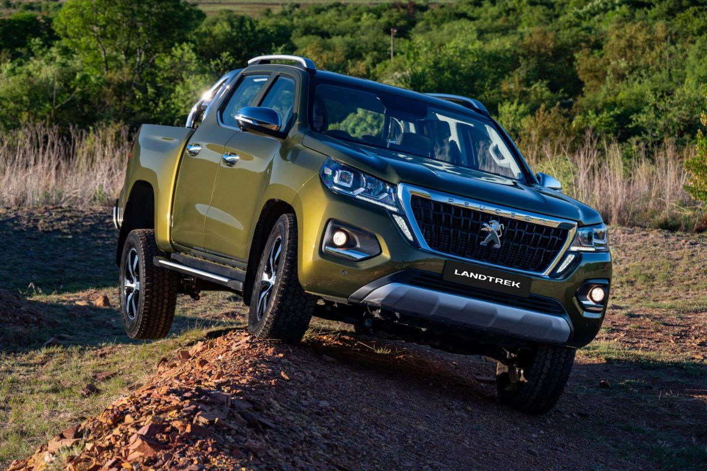

Auto4Sale Review
Peugeot Landtrek in SA (2021)
- Model tested: Peugeot Landtrek (2021)
- Price: R669 900
- Price as tested: R1 426 018
- Engine: 1.9-litre 4-cylinder turbodiesel
- Power/Torque: 110 kW and 350 Nm
- Transmission: 6-speed automatic
- Fuel efficiency: 9L/100 km (claimed)
- 0-100 kph: 8.0 sec (claimed)
- Top speed: 210 kph
- Load capacity: 613-1 440 litres
The Peugeot Landtrek is built in China and retains some styling traits of the French marque, both inside and out. Peugeot is offering the Landtrek in 2 flavours: Allure 4×2 and 4Action 4×4. Both are powered by a 1.9-litre 4-cylinder turbodiesel engine that produces 110 kW and 350 Nm and is combined with a 6-speed automatic transmission. So far, the newcomer is on trend with the market’s preferences, then.
In terms of off-road capabilities, the Landtrek 4Action 4×4 offers shift-on-the-fly 2H to 4H, as well as a low-range transfer case (for 4L), has an approach/departure angle of 29 and 27 degrees respectively, a maximum wading depth of 600 mm and a ground clearance of 235 mm, which puts it in good company.
The Allure 4×2 and 4Action 4×4 come with an impressive array of standard equipment and customers can choose from 6 exterior finishes. Peugeot SA also confirmed it would be offering an accessories programme for the bakkie, which includes canopies, bike racks, and roof racks, to name but a few options.
Not to be unkind, but the Peugeot Landtrek is unlikely to challenge the marquee bakkie nameplates (Hilux and Ranger). Peugeot, despite its bakkie history, simply does not have brand cachet in the bakkie market, which partly explains why the discontinued (Mitsubishi Triton-based) Fiat Fullback never sold well. The bakkie fraternity is decidedly brand-loyal and usually reluctant to adopt as-yet-unproven models.
Having said that, with the bakkie market being so diverse (it offers a variety of models across a broad price spectrum), there’s an opportunity for the Peugeot Landtrek to steal sales from the other fringe players, such as the Mazda BT-50, Mahindra Pik-Up and Mitsubishi Triton. The tremendous value-for-money proposition of Chinese brand GWM’s P-Series is bound to trouble all of the above, however.
So, should you take a second look at the Peugeot Landtrek? The newcomer offers a well-appointed, upmarket cabin with good levels of fit and finish – it will certainly appeal to family-car buyers. The weak point of the Landtrek package is its seemingly gutless powertrain. Peugeot, JAC and Mazda offer a 1.9-litre turbodiesel engine in their bakkies, but most manufacturers offer bigger motors in their products and we have to remind ourselves that the majority of bakkies that journalists evaluate produce considerably higher outputs than the Landtrek. Perhaps we should lower our expectations accordingly.